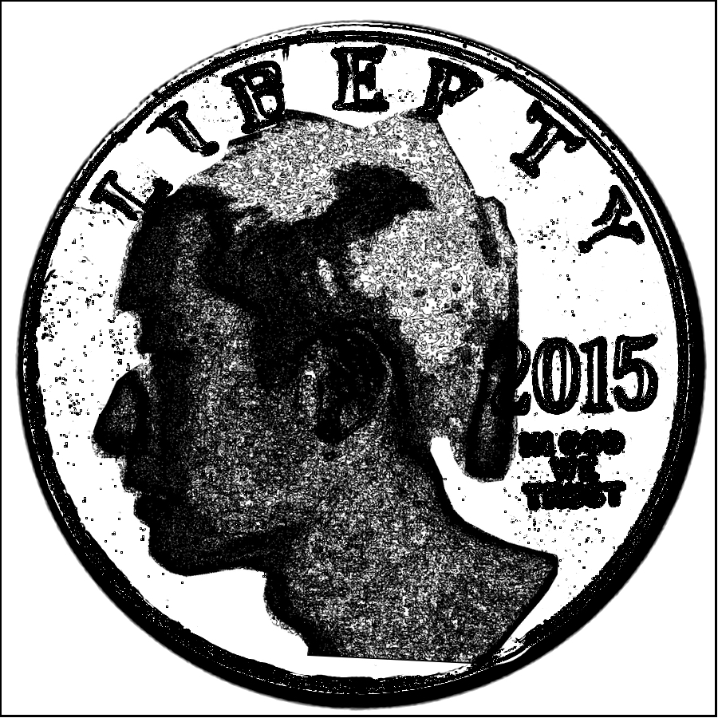
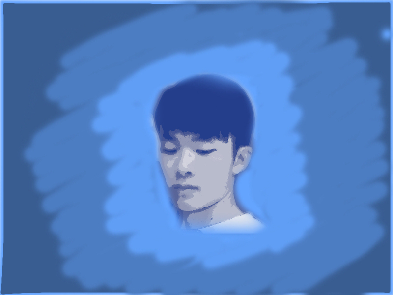

Sitao Chen
Gallery

This picture is a combination photo edited by Pixelmator. The background was a picture of an American coin (CC https://ccsearch.creativecommons.org/photos/06e0cba7-7665-4e9f-97cd-5f338317adee) in white background. I wiped the original figure out and put my head on the top of the coin. Then, I used one built-in effect, Sketch, to extract line features from both pictures.
In this picture, I emphasized the traditional painting process with the blueish brush painting on the background. I preprocessed my selfie with Blueprint, another Pixelmator effect, and synthesized two elements on the same picture.